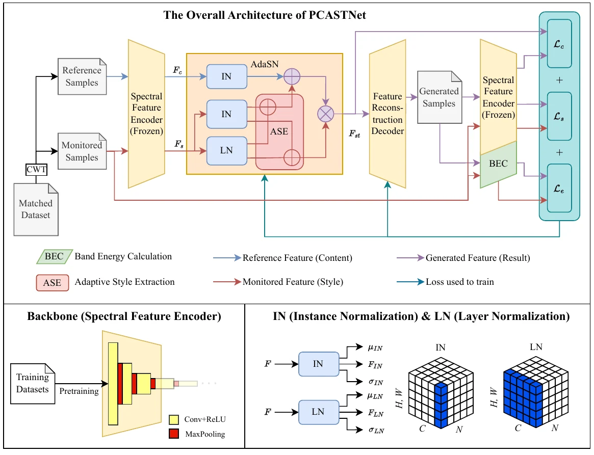

PCASTNet / ARCHITECTUREIEEE TIM

PCASTNet
Cross-machine, small-sample fault diagnosis
Separating fault content from machine style. Physics-constrained adaptive style transfer for cross-machine, small-sample fault diagnosis.


Truth inside markets, incentives, and collective decisions.